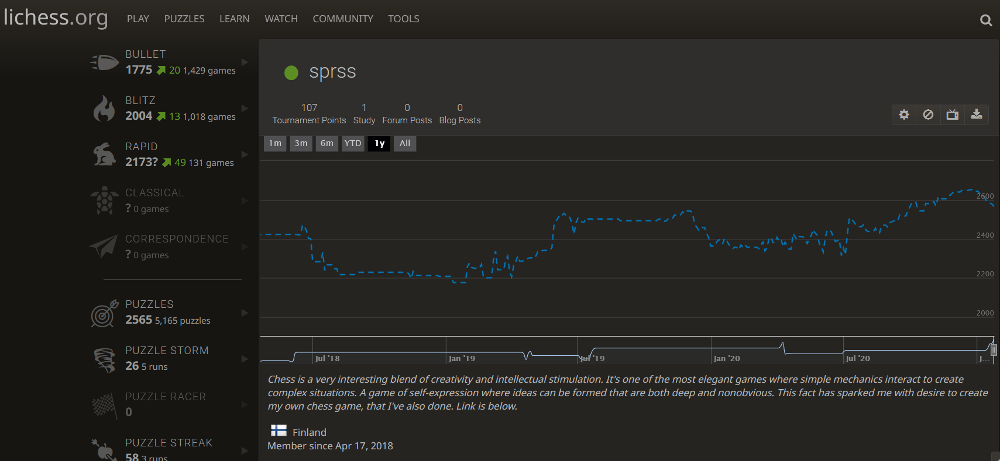

About me
As a game designer
I'm into systemic games. I'm into elegancy and emergent properties. Here's a link to understand better what it means.
As a person
My name is Miika Pihkala.
Very open and agreeable personality. Not neurotic. Average conscientiousness. A bit more extrovert than introvert.
I always tend to understand others and not judge them. I don't judge you for having different kind of brains and views than me, it's just how things are in life!
Social person, but also has hermit tendencies, because of being as much a dreamer as a man can be. So I'm happy with others and on my own, it's a win-win situation! :)
As a friend
I have a lot of good qualities for a great friend, but I'm pretty bad at contacting my friends. But I do enjoy most the time spent with other people.
Questions & Answers
What are your favourite game design books?
- My favourite game design book is Designing Games: A Guide to Engineering Experiences [Tynan Sylvester]. My second most favourite game design book is The Art of Game Design: A Book of Lenses[Jesse Schell].
Do you have irrational fears?
- Yes, I've got a fear of heights, but it has got better since I visited Sicily, which is really mountainous. So facing the fear has helped me.
Some things that you like?
- Improvisational theatre, standup comedy, movies, games, escape rooms, writing, philosophy, psychology.. ice cream.
Gaming Hobby
If you like what I'm doing, please consider supporting my games career with Patreon. (No one has done that yet, be the first and bravest!)
© Miika Pihkala